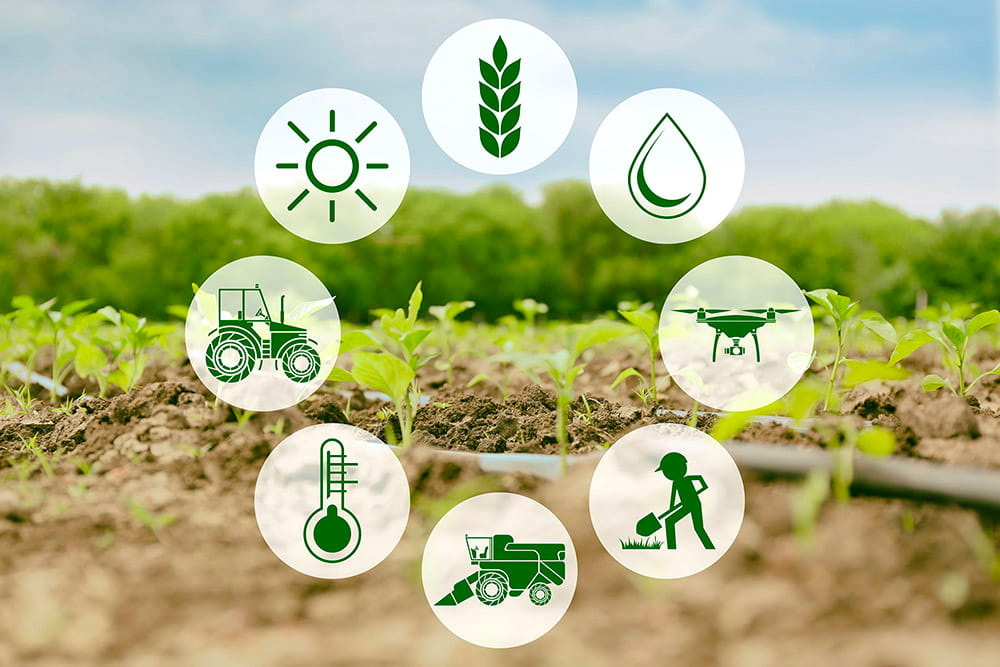

Nurturing Growth, Cultivating Future
What We Do

Agricure is dedicated to transforming the agriculture industry through innovative solutions and sustainable practices. Our focus is on supporting farmers with the latest technology, fostering education, and promoting environmentally friendly farming methods.
- Consulting Services: We provide expert consulting on crop management, soil health, and sustainable farming practices tailored to your needs.
- Technology Integration: From precision farming tools to AI-driven analytics, we help farmers implement the latest technologies to maximize efficiency and yield.
- Educational Outreach: Our workshops, training sessions, and online courses empower farmers with the knowledge to adopt best practices and improve their operations.
Read More
News

Stay informed with the latest developments in the agriculture sector. We provide up-to-date news on policy changes, market trends, and technological advancements that are shaping the future of farming.
- Global Agricultural Policy: Learn about the latest policy changes and their implications on local and global agriculture.
- Market Trends: Stay ahead with insights into market dynamics, price trends, and demand forecasts.
- Technological Breakthroughs: Discover the latest innovations in agriculture technology that are revolutionizing the industry.
Read More
Research and Learning
Access a comprehensive collection of research papers, case studies, and educational resources to enhance your understanding of sustainable agriculture.
- Research Papers: Explore our extensive library of research papers on topics like soil health, crop diversification, and climate change adaptation.
- Educational Courses: Enroll in our online courses designed for farmers, agronomists, and students to deepen their knowledge and skills.
- Interactive Tools: Use our tools to calculate crop yields, analyze soil quality, and develop customized farming plans.
Explore Resources
Explore
Dive into a wealth of data, explore innovative technologies, and learn about sustainability practices that are shaping the future of agriculture.
- Agriculture Data: Access global and regional data on crop production, land use, and water resources to understand the big picture.
- Technological Innovations: Learn about the latest tools and techniques, including precision farming, drone technology, and AI in agriculture.
- Sustainability Practices: Discover how to implement sustainable farming methods that protect the environment and ensure long-term productivity.
Explore Data